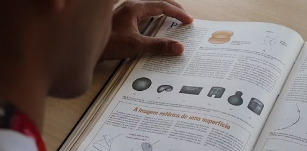
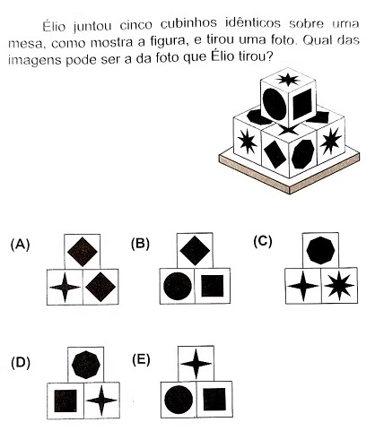

Você acertaria questão de lógica que desafiou alunos de escola pública na OBMEP? Veja como resolverEdição de 2026 da Olímpiada Brasileira de Matemática reuniu mais de 18,3 milhões de estudantes de todo o país.Publicado em 11 de junho de 2026  Se as fórmulas, muitas vezes, são o pesadelo dos alunos nas provas de exatas, na Olimpíada Brasileira de Matemática das Escolas Públicas (OBMEP) deste ano, foi a lógica (ou a falta dela) que deixou os estudantes indignados. A primeira fase da 21ª OBMEP aconteceu na última terça-feira (19) e reuniu mais de 18,3 milhões de estudantes de escolas por todo o país. Poucas horas depois da prova, uma questão já era motivo de críticas e discussões entre quem fez o exame nas redes sociais: a questão dos cubos empilhados. O exercício trazia uma figura com cinco cubos idênticos, com figuras em todas as faces e pedia que o aluno identificasse qual foto nas alternativas poderia ter sido tirada, considerando a composição. (veja a questão abaixo) O professor Marco Moriconi, integrante do Comitê de Provas da OBMEP, explica que se tratava de uma questão puramente de lógica, de raciocínio puro. Ou seja, não exigia que o aluno decorasse nenhuma fórmula. "Como a questão exige vários passos, não dá pra dizer que é uma questão fácil. A visualização espacial certamente é algo que também pode complicar, mas basicamente é uma questão de lógica", analisa o professor. Veja abaixo qual era a questão, tente resolver e veja a explicação dos professores ouvidos pelo g1.  Resposta: A Como resolver a questão? Os professores explicam que, antes de tudo, essa é uma questão que exigia que o aluno prestasse muita atenção ao enunciado e às imagens. "Quando você lê uma questão dessa, você tem que entender que cada informação ali conta", explica Moriconi. De forma geral, a resolução dependia de quatro passos principais:
Victor Pompêo, professor de Matemática do Curso Anglo, explica que, ao passar por essas etapas, o aluno percebe que, como o cubo do segundo andar tem a estrela de oito pontas virada para cima, obrigatoriamente a estrela de quatro pontas precisa estar na face oculta, na parte debaixo do cubo – e esse raciocínio elimina a alternativa E, por exemplo. "A gente não conseguiria enxergar a estrela de quatro pontas como uma das faces visíveis na lateral do cubinho de cima, como indica a alternativa", comenta o professor. A mesma lógica deve ser aplicada para as outras alternativas:
Assim, a única resposta possível é a alternativa A, já que ela reúne:
"A questão é como um sudoku, de lógica e eliminação de combinação de possibilidades. A dificuldade a mais é que exige visualização espacial", analisa Moriconi. Referência: Notícia original no G1 |